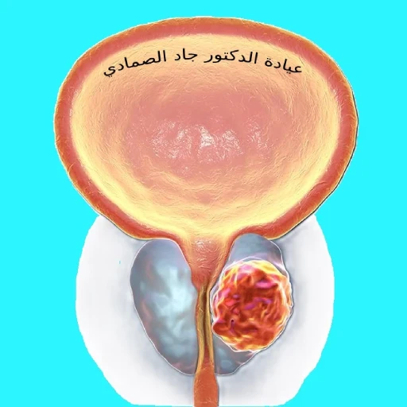

ورم البروستاتا (سرطان البروستات)
ما يجب أن يعرفه كل رجل عن ورم البروستات:

يجب معرفة الحقيقة حول سرطان البروستاتا لأن؛ لسوء الحظ ، غالبا ما يكون من الصعب فصل الحقائق عن المغالطات. إذا كنت أنت أو أي شخص تعرفه مصابا بسرطان البروستاتا، فمن المهم الحصول على الحقائق و من مصادر موثوقة حول هذا المرض وعلاجاته، لأنه إذا تم اكتشافه مبكرا، فإن سرطان البروستاتا هو أحد أكثر الأورام الخبيثة التي يمكن علاجها.
أولاً في حين أن جميع الأسباب التي قد تجعل الرجال يصابون بسرطان البروستاتا غير معروفة، فقد تم تحديد بعض عوامل الخطر ، بما في ذلك العمر والعِرق والتاريخ العائلي وبعض الميول الغذائية. لحسن الحظ، هنالك الآن طرق أفضل لتشخيص سرطان البروستات وعلاجه والوقاية منه.
تتضخم غدة البروستاتا مع تقدم الرجال في العمر؛ و من الصعب التمييز بين أعراض تضخم البروستاتا الناجم عن النمو السرطاني أو غير السرطاني. نظرا لأن معظم أنواع السرطان تنشأ في الجزء الخارجي من غدة البروستات، فقد يشعر طبيبك في كثير من الأحيان بخلل في فحص الغدة عن طريق المستقيم.
تشير الأدلة المتزايدة إلى أن هناك إجراءات إيجابية يمكنك اتخاذها لمنع سرطان البروستاتا من الحدوث. وتشمل هذه تجنب الوجبات الغذائية التي تحتوي على نسبة عالية جدا من اللحوم الحمراء والدهون وزيادة بعض الفواكه والخضروات في النظام الغذائي مثل منتجات الصويا والطماطم المطبوخة و بعض الخضروات العشبية؛ مثل الملفوف والفجل واللفت والزهرة والجرجير. كما ويبدو أن تناول كميات مناسبة من الفيتامينات، وخاصة فيتامين E و D ، مفيد.
تشخيص سرطان البروستات
الأعراض التي قد تدل على وجود سرطان البروستات:
- ألم أو حرقان أثناء التبول
- دم في البول أو السائل المنوي
- الحاجة إلى التبول بشكل متكرر ليلا و نهارا
- ضعف دفع البول أو تدفق بطيء
- الشعور بأن المثانة لا تفرغ تماماً
- توقُّف البول و عودته لاإرادياً
- الحاجة المُلِحَّة للتبول
- صعوبة أو تأخير في بدء التبول
- ألم متكرر في الظهر أو الوركين أو الحوض
الفحوصات و التصوير
يشيع استخدام اختبارين للفحص الأوَّلي: مُسْتَضَدْ البروستاتا النوعي (PSA)، الذي يختبر كمية PSA في الدم، والفحص السريري لغدة البروستات عن طريق المستقيم (DRE). إذا كانت أي من هذه النتائج غير طبيعية، فهناك حاجة إلى مزيد من الفحوصات. على الرغم من وجود جدل على إجراء فحص مستضد البروستاتا النوعي بشكل دوري في السنوات الأخيرة؛ الا أنه يمكن أن يكتشف سرطان البروستاتا مبكراََ، لكن بقيت بعض التساؤلات حول ما إذا كان يساعد في اطالة أعمار المصابين بسرطان البروستاتا أو أنه يؤدي فقط إلى علاج غير ضروري لسرطان البروستات. لكن عدد من الدراسات الأميريكية الكبيرة أثبتت أن عدم إجراء فحص ال PSA بشكل دوري يؤدي الى زيادة عدد المصابين بسرطان البروستات المتقدم و الذي يصعب علاجه. وخلصت هذه الدراسات إلى أن الوعي بال PSA والفحص الواسع النطاق خلال السنوات ال 20 الماضية قد أدى إلى اكتشاف سرطان البروستات في مراحل مبكرة عند الكثير من الرجال، و اللذي يكون في مرحلة عندما يكون قابلا للشفاء في كثير من الأحيان. اذاً من المهم إجراء فحوصات البروستاتا بانتظام بالنسبة للرجال الذين تبلغ أعمارهم 50 عاما أو أكبر حتى لو كان ليس لديهم أعراض.
ماذا بعد الفحوصات الأولية؟ من المهم معرفة أن وجود قراءة غير سليمة في الفحصين السابقين لا تعني بالضرورة وجود ورم في غدة البروستات. و أن الفحص اللذي يؤكد وجود سرطان البروستات من عدم وجوده هو إجراء خزعة البروستات و اللتي تتم تحت التصوير بالألتراساوند عن طريق المستقيم. (خزعة البروستات الموجَّهة بالموجات فوق الصوتية عبر المستقيم ). يقوم استشاري الكلى والمسالك البوليه بأخذ عينات أنسجة متعددة من غدة البروستات، ثم يتم ارسال هذه العينات لمختبر فحص الأنسجة. وفحص الأنسجة هو اللذي يثبت وجود سرطان في البروستات من عدم وجوده.
هل يوجد صور أخرى؟
نعم؛ يوجد التصوير بالرنين المغناطيسي متعدد الأبعاد (mpMRI) لسرطان البروستاتا. ومن المهم معرفة أن تصوير الرنين المغناطيسي للبروستات لا يشخص وجود ورم من عدم وجود ورم البروستات؛ لكنه يساعد أخصائي المسالك البولية في تحديد ما اذا كانت هناك منطقة مشتبه بها في البروستات أم لا، و هذا أيضاً يساعد في معرفة ما اذا كنت بحاجة لإجراء خزعة البروستات أم لا من الأساس. ويساعد أيضاََ في معرفة اذا كان ورم البروستات قد انتشر حول غدة البروستات أم لا. أما عن الصور الأُخرى فقد يتم طلب صور طبقية و/أو صور نووية لمعرفة مرحلة ورم البروستات داخل الجسم في حال كانت خزعة البروستات ايجابية.
علاج سرطان البروستات
يمكن للأشخاص المصابين بسرطان البروستاتا في كثير من الأحيان اختيار طريقة علاجهم. و هذا لأنَّ سرطان البروستات يتميز بوجود خطوط علاجية متعددة مع الحفاظ على نتائج متقاربة في الإستجابة للعلاج. الخيارات الرئيسية في علاج ورم البروستات هي:
- المراقبة النشطة - إذا تم اختيار هذا الخيار، فلن يتم البدء بالعلاج على الفور. ولكن سيكون لديك فحوصات دورية روتينية للتحقق مما إذا كان السرطان ينمو بسرعة أم لا. إذا كان ينمو بسرعة، يتم البدء في العلاج الفعال بعد ذلك.
- الجراحة أي استئصال البروستات الجذري - يعتبر الأسرع في علاج سرطان البروستاتا في بعض الأحيان لأنه بإزالة غدة البروستاتا يتم إزالة الورم و لا يتبقى شيء للقلق منه.
- العلاج الإشعاعي - الإشعاع يقتل الخلايا السرطانية. يمكن إعطاء الإشعاع من جهاز من خارج الجسم. أو قد يتم وضع زرعات للإشعاع مباشرة في غدة البروستاتا.
- العلاج الهرموني - الهرمونات الذكرية في الجسم تجعل سرطان البروستاتا ينمو. يقلل العلاج الهرموني من مستويات هذه الهرمونات، والتي يمكن أن تقلص حجم السرطان. بالنسبة للعلاج الهرموني، قد تكون على شكل أدوية أو حقن. أو قد تخضع لعملية جراحية لإزالة أنسجة الخصيتين مع المحافظة على الشكل الخارجي للخصيتين. (ملاحظة: تصنع الهرمونات الذكرية في الخصيتين.) عادة ما يكون هذا العلاج فقط لأولئك الذين يعانون من سرطان متقدم. لكن بعض الأشخاص المصابين بالسرطان في مراحله المبكرة قد يحتاجون للعلاج الهرموني لسرطان البروستات مع الإشعاع أو قبل الجراحة.
ملخص سرطان البروستات
سرطان البروستات هو ورم خبيث يؤثر على غدة البروستاتا لدى الرجال. يمكن أن يسبب أعراضا مثل الألم أثناء التبول، دم في البول أو السائل المنوي، والتبول المتكرر. يتم تشخيص المرض باستخدام اختبارات PSA والفحص عن طريق المستقيم، وقد يتطلب الأمر إجراء خزعة لتأكيد التشخيص. تتضمن خيارات العلاج الجراحة، العلاج الإشعاعي، والعلاج الهرموني. من المهم إجراء فحوصات دورية للرجال فوق سن الخمسين للكشف المبكر عن المرض.
مراجع ورم البروستاتا (سرطان البروستات):
-
Hugosson J, Roobol MJ, Månsson M, Tammela TLJ, Zappa M, Nelen V, Kwiatkowski M, Lujan M, Carlsson SV, Talala KM, Lilja H, Denis LJ, Recker F, Paez A, Puliti D, Villers A, Rebillard X, Kilpeläinen TP, Stenman UH, Godtman RA, Stinesen Kollberg K, Moss SM, Kujala P, Taari K, Huber A, van der Kwast T, Heijnsdijk EA, Bangma C, De Koning HJ, Schröder FH, Auvinen A; ERSPC investigators. A 16-yr Follow-up of the European Randomized study of Screening for Prostate Cancer. Eur Urol. 2019 Jul;76(1):43-51. doi: 10.1016/j.eururo.2019.02.009. Epub 2019 Feb 26. PMID: 30824296; PMCID: PMC7513694.
-
Schröder FH, Hugosson J, Carlsson S, Tammela T, Määttänen L, Auvinen A, Kwiatkowski M, Recker F, Roobol MJ. Screening for prostate cancer decreases the risk of developing metastatic disease: findings from the European Randomized Study of Screening for Prostate Cancer (ERSPC). Eur Urol. 2012 Nov;62(5):745-52. doi: 10.1016/j.eururo.2012.05.068. Epub 2012 Jun 7. PMID: 22704366.
-
US Preventive Services Task Force; Grossman DC, Curry SJ, Owens DK, Bibbins-Domingo K, Caughey AB, Davidson KW, Doubeni CA, Ebell M, Epling JW Jr, Kemper AR, Krist AH, Kubik M, Landefeld CS, Mangione CM, Silverstein M, Simon MA, Siu AL, Tseng CW. Screening for Prostate Cancer: US Preventive Services Task Force Recommendation Statement. JAMA. 2018 May 8;319(18):1901-1913. doi: 10.1001/jama.2018.3710. Erratum in: JAMA. 2018 Jun 19;319(23):2443. PMID: 29801017.
-
Wolf AM, Wender RC, Etzioni RB, Thompson IM, D'Amico AV, Volk RJ, Brooks DD, Dash C, Guessous I, Andrews K, DeSantis C, Smith RA; American Cancer Society Prostate Cancer Advisory Committee. American Cancer Society guideline for the early detection of prostate cancer: update 2010. CA Cancer J Clin. 2010 Mar-Apr;60(2):70-98. doi: 10.3322/caac.20066. Epub 2010 Mar 3. PMID: 20200110.
-
Carter HB, Albertsen PC, Barry MJ, Etzioni R, Freedland SJ, Greene KL, Holmberg L, Kantoff P, Konety BR, Murad MH, Penson DF, Zietman AL. Early detection of prostate cancer: AUA Guideline. J Urol. 2013 Aug;190(2):419-26. doi: 10.1016/j.juro.2013.04.119. Epub 2013 May 6. PMID: 23659877; PMCID: PMC4020420.
-
Fenton JJ, Weyrich MS, Durbin S, Liu Y, Bang H, Melnikow J. Prostate-Specific Antigen-Based Screening for Prostate Cancer: Evidence Report and Systematic Review for the US Preventive Services Task Force. JAMA. 2018 May 8;319(18):1914-1931. doi: 10.1001/jama.2018.3712. PMID: 29801018.
-
Global Burden of Disease Cancer Collaboration; Fitzmaurice C, Allen C, Barber RM, Barregard L, Bhutta ZA, Brenner H, Dicker DJ, Chimed-Orchir O, Dandona R, Dandona L, Fleming T, Forouzanfar MH, Hancock J, Hay RJ, Hunter-Merrill R, Huynh C, Hosgood HD, Johnson CO, Jonas JB, Khubchandani J, Kumar GA, Kutz M, Lan Q, Larson HJ, Liang X, Lim SS, Lopez AD, MacIntyre MF, Marczak L, Marquez N, Mokdad AH, Pinho C, Pourmalek F, Salomon JA, Sanabria JR, Sandar L, Sartorius B, Schwartz SM, Shackelford KA, Shibuya K, Stanaway J, Steiner C, Sun J, Takahashi K, Vollset SE, Vos T, Wagner JA, Wang H, Westerman R, Zeeb H, Zoeckler L, Abd-Allah F, Ahmed MB, Alabed S, Alam NK, Aldhahri SF, Alem G, Alemayohu MA, Ali R, Al-Raddadi R, Amare A, Amoako Y, Artaman A, Asayesh H, Atnafu N, Awasthi A, Saleem HB, Barac A, Bedi N, Bensenor I, Berhane A, Bernabé E, Betsu B, Binagwaho A, Boneya D, Campos-Nonato I, Castañeda-Orjuela C, Catalá-López F, Chiang P, Chibueze C, Chitheer A, Choi JY, Cowie B, Damtew S, das Neves J, Dey S, Dharmaratne S, Dhillon P, Ding E, Driscoll T, Ekwueme D, Endries AY, Farvid M, Farzadfar F, Fernandes J, Fischer F, G/Hiwot TT, Gebru A, Gopalani S, Hailu A, Horino M, Horita N, Husseini A, Huybrechts I, Inoue M, Islami F, Jakovljevic M, James S, Javanbakht M, Jee SH, Kasaeian A, Kedir MS, Khader YS, Khang YH, Kim D, Leigh J, Linn S, Lunevicius R, El Razek HMA, Malekzadeh R, Malta DC, Marcenes W, Markos D, Melaku YA, Meles KG, Mendoza W, Mengiste DT, Meretoja TJ, Miller TR, Mohammad KA, Mohammadi A, Mohammed S, Moradi-Lakeh M, Nagel G, Nand D, Le Nguyen Q, Nolte S, Ogbo FA, Oladimeji KE, Oren E, Pa M, Park EK, Pereira DM, Plass D, Qorbani M, Radfar A, Rafay A, Rahman M, Rana SM, Søreide K, Satpathy M, Sawhney M, Sepanlou SG, Shaikh MA, She J, Shiue I, Shore HR, Shrime MG, So S, Soneji S, Stathopoulou V, Stroumpoulis K, Sufiyan MB, Sykes BL, Tabarés-Seisdedos R, Tadese F, Tedla BA, Tessema GA, Thakur JS, Tran BX, Ukwaja KN, Uzochukwu BSC, Vlassov VV, Weiderpass E, Wubshet Terefe M, Yebyo HG, Yimam HH, Yonemoto N, Younis MZ, Yu C, Zaidi Z, Zaki MES, Zenebe ZM, Murray CJL, Naghavi M. Global, Regional, and National Cancer Incidence, Mortality, Years of Life Lost, Years Lived With Disability, and Disability-Adjusted Life-years for 32 Cancer Groups, 1990 to 2015: A Systematic Analysis for the Global Burden of Disease Study. JAMA Oncol. 2017 Apr 1;3(4):524-548. doi: 10.1001/jamaoncol.2016.5688. Erratum in: JAMA Oncol. 2017 Mar 1;3(3):418. PMID: 27918777; PMCID: PMC6103527.
-
Hsiao CP, Loescher LJ, Moore IM. Symptoms and symptom distress in localized prostate cancer. Cancer Nurs. 2007 Nov-Dec;30(6):E19-32. doi: 10.1097/01.NCC.0000300163.13639.bc. PMID: 18025909.
-
Patel HD, Chalfin HJ, Carter HB. Improving Prostate Cancer Screening and Diagnosis: Health Policy and Biomarkers Beyond PSA. JAMA Oncol. 2016 Jul 1;2(7):867-8. doi: 10.1001/jamaoncol.2016.0170. PMID: 27031887.
-
Nordström T, Annerstedt M, Glaessgen A, Carlsson S, Clements M, Abbadi A, Grönberg H, Jäderling F, Eklund M, Discacciati A. Repeated Prostate Cancer Screening Using Prostate-Specific Antigen Testing and Magnetic Resonance Imaging: A Secondary Analysis of the STHLM3-MRI Randomized Clinical Trial. JAMA Netw Open. 2024 Feb 5;7(2):e2354577. doi: 10.1001/jamanetworkopen.2023.54577. PMID: 38324313; PMCID: PMC10851096.